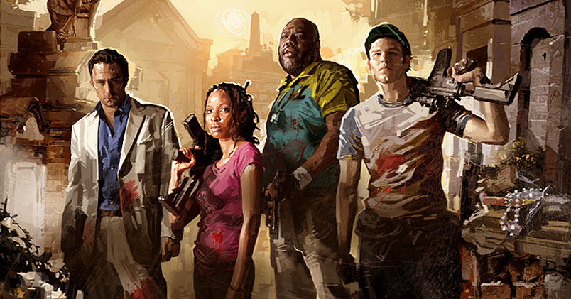
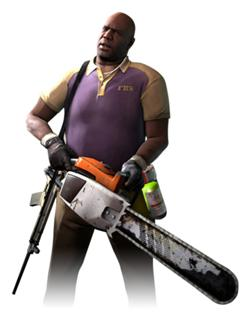
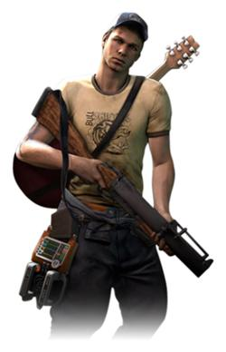
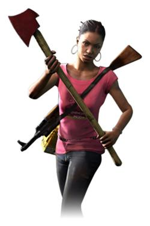

Meet The Survivors

Coach is . . . what else? A football coach! A HIGH SCHOOL football coach, no less. Coach works from the Savannah area where the game starts out. A natural leader that is used to bossing the kids around, he lives a comfortable life and is not happy at the arrival of zombies to mess up his day.
Not a girl but a guy, Ellis is a mechanic from the South. He is enthusiastic about his job and a smart guy in general. And he is there to give the game some “Southern flair” to match the game’s Southern locations.
Nick is not a nice guy, but a swindler, conman, gambler . . . He is cynical about the events taking place in his town and has no trust in the company around him.
The lone female character of the group, she is originally from Cleveland but is living in Savannah at the time of the zombie outbreak due to her work. She works for a cable news network and is producing a segment on the “strange story taking place in Savannah” when she gets caught up in the thick of things as they occur.
Jamell Winn 2012 ©